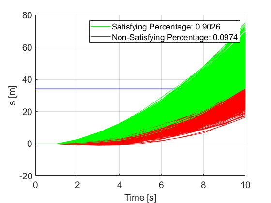

4. Control Synthesis with A/G Contract¶
PyCASSE enables reasoning about the behavior of a component \(M\), with given dynamics, using A/G contracts.
\[\begin{split}C_1 \wedge C_2 = & \; (V_1 \cup V_2, A_1 \cup A_2, G_1 \cap G_2) \\
C_1 \otimes C_2 = & \; (V_1 \cup V_2, (A_1 \cap A_2) \cup \overline{(G_1 \cap G_2)}, G_1 \cap G_2)\end{split}\]
4.1. Control Synthesis with STL A/G Contract in PyCASSE¶

from pycasse import *
import time
# Build a contract
c = contract('c') # Create a contract c
c.add_deter_vars(['s', 'v', 'a'],
bounds = [[-100, 1000], [-5, 10], [-1, 1]]) # Set deterministic variables
c.set_assume('True') # Set/define the assumptions
c.set_guaran('G[0,10] ((F[0,5] (s => 3)) & (F[0,5] (s <= 0)))') # Set/define the guarantees
c.checkSat() # Saturate c
c.printInfo() # Print c
# Build a linear system dynamics
solver = MILPSolver()
solver.add_contract(c)
# Build a linear system dynamics
solver.add_dynamics(x = ['s', 'v'], u = ['a'], A = [[1, 1], [0, 1]], B = [[0], [1]])
# Add initial conditions
solver.add_init_condition('s == 0')
solver.add_init_condition('v == 0')
# Add guarantee constraints
solver.add_constraint(c.guarantee, name='b_g')
# Solve the problem using MILP solver
start = time.time()
solved = solver.solve()
end = time.time()
print("Time elaspsed for MILP: {} [seconds].\n".format(end - start))
if solved:
solver.print_solution()
4.2. Control Synthesis with StSTL A/G Contract in PyCASSE¶

from pycasse import *
import time
# Build a contract
c = contract('c') # Create a contract c
c.add_deter_vars(['s', 'v', 'a'],
bounds = [[-100, 2000], [-5, 10], [-1, 1]]) # Set deterministic variables
c.set_assume('True') # Set/define the assumptions
c.set_guaran('F[0,10] (P[0.9] (s => 34))') # Set/define the guarantees
c.checkSat() # Saturate c
c.printInfo() # Print c
# Build a linear system dynamics
solver = MILPSolver()
solver.add_contract(c)
# Build a linear system dynamics
solver.add_dynamics(x = ['s', 'v'], u = ['a'], A = [[1, 1], [0, 1]], B = [[0], [1]], Q = [[0, 0], [0, 0.5**2]])
# Add initial conditions
solver.add_init_condition('s == 0')
solver.add_init_condition('v == 0')
# Add guarantee constraints
solver.add_constraint(c.guarantee, name='b_g')
# Solve the problem using MILP solver
start = time.time()
solved = solver.solve()
end = time.time()
print("Time elaspsed for MILP: {} [seconds].\n".format(end - start))
if solved:
solver.print_solution()
asdf

{kind=link}
\(10^5\) simulation in MATLAB.
Simulations in MATLAB show that…